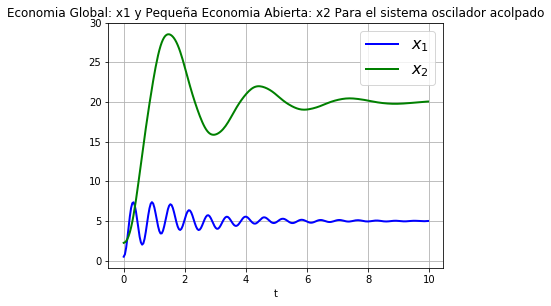

Variaciones según la cantidad amortiguada:
Cuando el parametro es negativo, tenemos Oscilaciones Explosivas
Donde la Amplitud se hace mayor conforme pasa el tiempo, muy rápido.
Cuando el parametro es 0 (Oscilador Armonico)
Cuando el parametro es 0.2 (Oscilador Armonico)
Cuando el parametro es 1 (Oscilador Armonico)
Despues de hacer unos cambios al sistema original llegamos a un nuevo sistema del tipo Van Der Pol, donde encontramos un ciclo límite
Tenemos el caso especial de las economías suficientemente pequeñas, que cambios en su dinamica no tienen impacto considerable en la dinamica total, son las que tienen una propensión a importar muy pequeña.
Y vemos que la diferencia en cambios de la economia pequeña no hay grandes cambios en la economia global
Cuando la economia pequeña se somete a la fuerza de la economia mundial, esta agrega una variable al modelo que puede provocar el caos, para valores de w = 2.457, tenemos que Van Der Pol pierde el ciclo limite y entra en un estado de Caos.